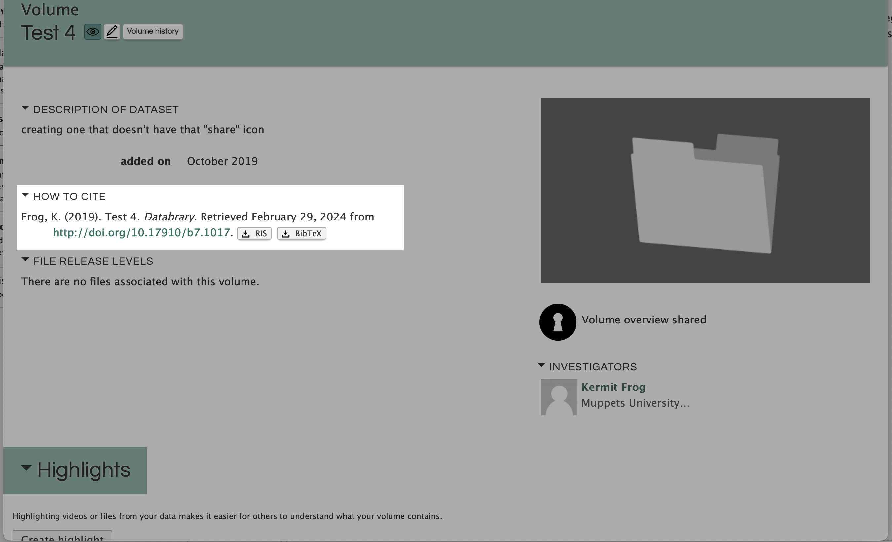
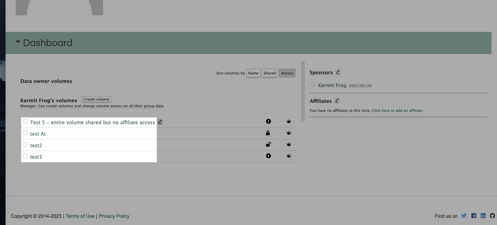
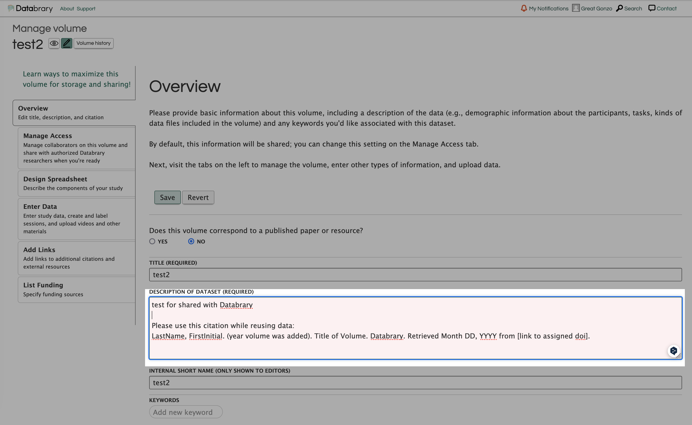
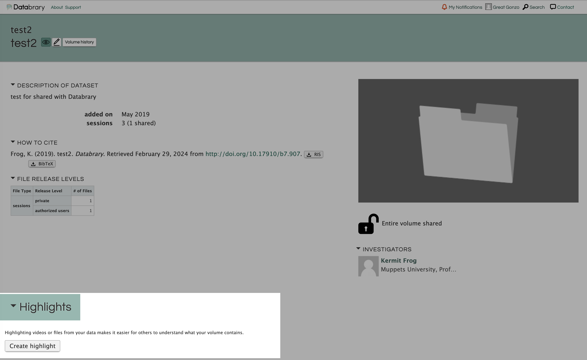

Edit a Volume
Overview
You can make changes to your volume property such as, citations, metadata, hierarchical structure, or adding specific details of one participant.
Do not worry that edits on volume would break the doi links. It is worthy noting that the non-deletable characteristics of volumes are designed to keep the sustainable accessibility of doi links. The only way to break the link is deleting the volume, which can only be performed by Databrary Staffs.
Edit Citation

Citations are automatically created based on current property of dataset. It would follow the naming rule of:
LastName, FirstInitial. (year volume was added). Title of Volume. Databrary. Retrieved Month DD, YYYY from [link to assigned doi].
Find an example of a public volume here
Admin, D., Gilmore, R.O., Seisler, A.R. & Soska, K. (2018). Databrary & Datavyu Help Videos. Databrary. Retrieved February 7, 2023 from http://doi.org/10.17910/B7.686.
Lastname, FirstInitial: names of authorized investigators only. Current version Databrary only supports adding authorizied investigators on the doi. We are making improvements on adapting a new version where names on doi can be selected by manual choices.
year volumes was added: The year the volume was created, not the last modified date.
Title of Volume: This would use the public name of the volume.
You can check the citation by clicking on the selected volume.

If the automatically generated citation failed to reflect the authors of the study, you may consider to add notes in the description of the volume. For instance, a student with affiliates access should be considered as an author, but their name are not properly shown on the citation due to algorithm limitations. In the case, you can add alternative citation written by themselves in the volume description.

Set up Highlight Spreadsheet
Databrary allow various formats in storing study-related dataset. However, we encourage studies to illustrate their highlights with uniformed structure: .CSV files.
You may find the create highlight here:

You are able to set up a meta-data part for you dataset in the form of spreadsheets. The spreadsheet illustrates preview on core concept of your study. You are able to select highlights based on the file you uploaded. Unfortunately, meta-data must follow certain format to be recognized by Databrary:
Your file must be in .csv format.
Your file must include each variable selected on the Design Spreadsheet tab, and ONLY those variables.
Headers must be in the first row and header names must match those listed on the Design Spreadsheet tab.
Data must match the Databrary options (e.g., Male/Female) and dates must be in YYYY-MM-DD format.
Add Data
- Select appropriate release level for session in Databrary.
Enter Metadata
Creating a new Session or Materials folder
Session folders are for participant sessions and materials folders are for thing related to the study such as surveys used, sample consent forms, and stimuli.
Session folders need to be added individually. Once the Participant ID is entered, the related metadata will be filled in. Then the rest of the session information will need to be added individually.
To add a new folder, go to the “Enter Data” tab on the left side of your screen. Scroll to the bottom of your volume. Select “add folder”. Using the drop down menu, select the type of folder you wish to create (“sessions” or “materials”).
Add files to an existing Session or Materials folder
To add files to an existing folder: * Go to the “Enter Data” tab on the left side of your screen. * Find the name of the folder that you wish to add files to. * Select “add file”, which will take you to the “Manage” page for the folder. * You may upload files by either dragging and dropping them into the outlined space or by clicking and selecting the files you wish to upload.
Here is a video tutorial on how to add a file on Databrary
Remove or Replace files from an existing Session or Materials folder
To remove a file: * Navigate to the “Manage” page for the folder. * Click on the file that you wish to remove and select the “Remove file” button. Databrary will prompt you to confirm that you wish to remove the file. Please note that removed files cannot be recovered.
Here is a video tutorial on how to remove a Databrary file
Alternatively, you can replace a file to upload a newer version of the same file while preserving the associated information. To replace a file:
- Click on the file that you wish to remove.
- Select the “Remove file” button. A window will pop up for you to select the file that you wish to replace the original file on Databrary with.
Here is a video tutorial on how to replace a Databrary file
Deleting a Sessions or Materials folder
To delete a sessions of materials folder from your volume, you need to first remove all files and metadata associated with it. An existing folder shall not be deleted by any user. If you mistakenly created a folder, you can remove all files and metadata associated with it and then contact Databrary staff to delete the folder. We recommend that users reuse folders rather than deleting them.
To remove files, see instructions above insert link to section above
Here is a video tutorial on how to delete a Databrary folder